Albisteak
POKÉMON TXARTEL BERRIAK DAUDE!
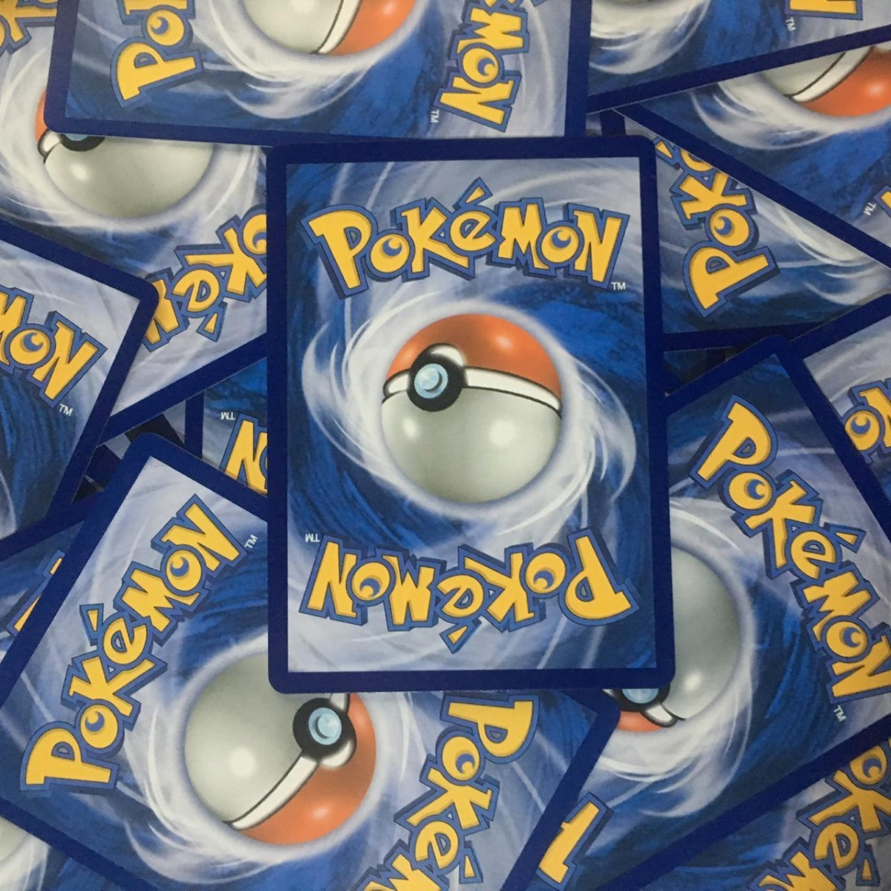
Pokémon zale guztientzat berriak ditugu: PX karta bereziak hemen daude! ⚡
💥 Zer dira PX txartelak?
Indar Berezia: Txartel hauek jokoan aurkarien aurka erabiltzeko ahalmen harrigarriak dituzte!
Diseinu Esklusiboak: Arte ikusgarriak eta distira itzela daukate, edozein bilduma hobetzeko.
Gure Txartelik Indartsuenak: Jokalari eta bildumazale guztien ametsa bihurtuko dira.
🔥 Karta Topak!
hasieran bakartuta utzi zuen. Hala ere, ausardiari eta lagunekiko leialtasunari esker,
benetako heroi bihurtzen da eta bere bidaiaren bidez adiskidetasunaren, erabakitasunaren eta
barkamenaren garrantzia ikasten du.
Gehiago Ikusi
Charizard PX – Sugar infernalez garaipena bermatzen duen txartela!
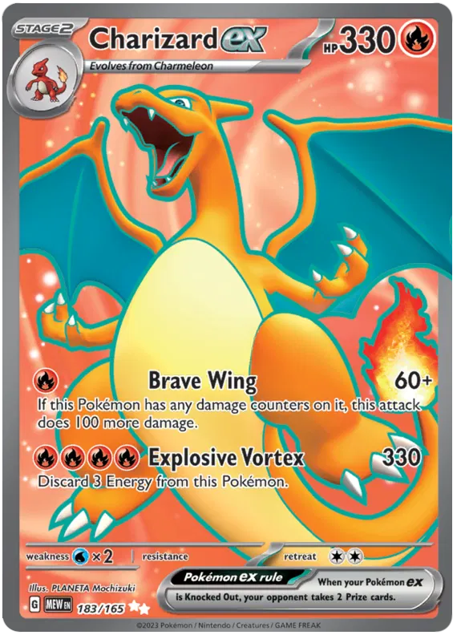
Pikachu PX – Tximista abiadurako mugimenduekin zure aurkariei kolpe zorrotzak emateko.
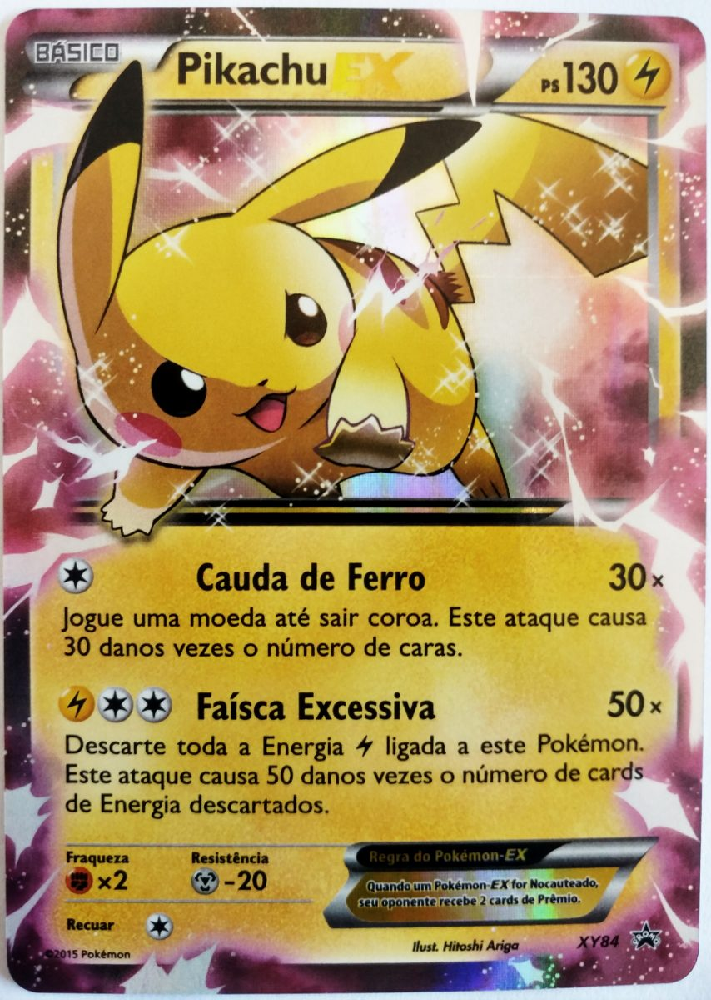
Mewtwo PX – Indar psikikoa kontrolatuz, aurkariaren taktika guztiei aurre egingo die.
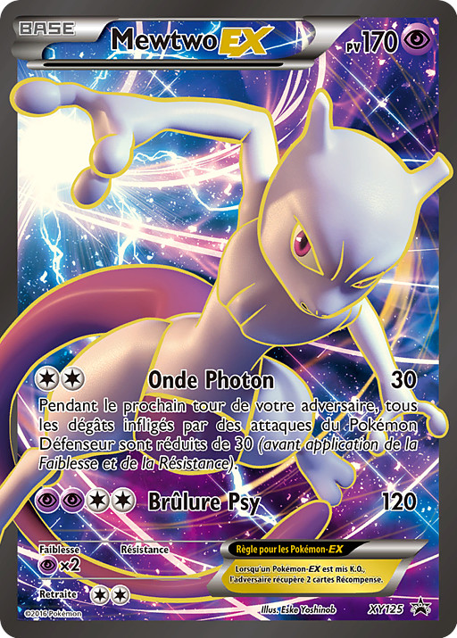
Arceus PX – Sortzaile handia zure taldearen gidaritzan jartzeko.
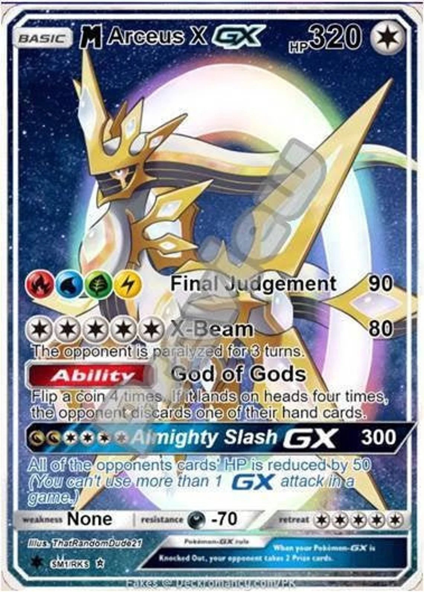
✨ Ez galdu! Kartak denda espezializatuetan eta sarean eskuragarri! Edozein txapelketarako edo bilduma osatzeko ezin hobeak dira.
👉 Bilduma hasi edo jokorako prest egon nahi? Jarrai gaitzazu azken albisteen eta eskaintzen berri izateko!
"Pokémon-en mundua zure esku!" 🌍
⚡ Prest al zaude PX aroari aurre egiteko? ⚡
Gotta catch 'em all! 🎮
⛵️ ONE PIECE GELDIALDIAN APIRILA 2025 ARTE! 🌊
Luffy eta bere tripulazioa atseden hartuko dute: One Piece seriea eten egingo da 2025eko apirilera arte. 🗓️
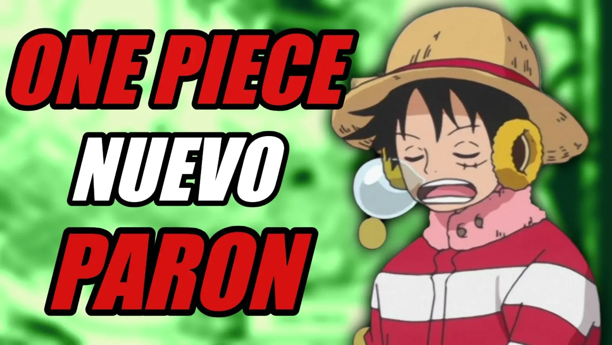
Zergatik etenaldia?
Eiichiro Oda, istorio epiko honen sortzailea, denbora hartzea erabaki du azken arkuari behar duen arreta eta dedikazioa
emateko. Grand Line-ren abenturaren amaiera merezi bezala egingo da! 🌟
💡 Badakiguna:
Itzuleraren data: Seriea 2025eko apirilean berriro hasiko da.
Epikotasunaren gailurra: Etorkizuneko kapituluetan sekretu handien berri izango dugu, One Piece-ren egia barne.
Oda-ren osasuna lehenik: Sortzaileak atseden hartzea eta kalitate goreneko istorioa bermatzea erabaki du.
🏴☠️ Nakama, pazientzia izan! Abentura epiko honek merezi du itxarotea.
"One Piece beti hor egongo da gure bihotzetan!" ❤️
Gehiago Ikusi
🎉 2025 URTEA: ANIMEAREN URTE EPIKOA! 🌟
Anime zaleok, prest egon! 2025a abentura eta emozioz betetako urtea izango da. Zure gogoko generoak berriro loratuko dira estreinaldi berri eta ikusgarriekin. 🌸
💡 2025ean estreinatuko diren anime nagusiak:
1️⃣ Attack on Titan: Final Season - Omenaldia
💥 Eren eta paradisoko gainerakoen amaierako borroka. Bihotza uzkurtuko duten emozioak eta epikotasun maila gorenean!
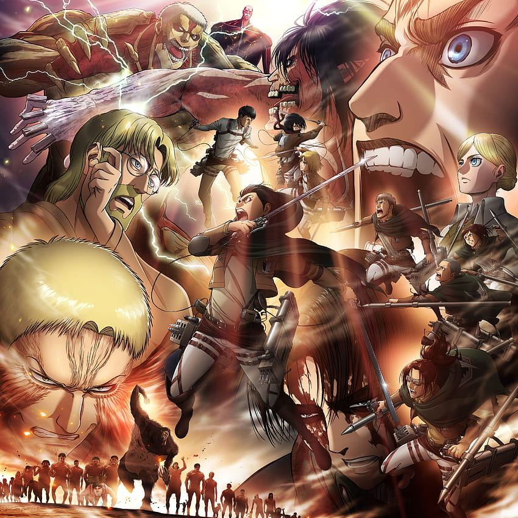
2️⃣ One Punch Man: 3. Denboraldia
👊 Saitama itzuli da eta oraingoan, Garo eta beste aurkari epikoen aurka egingo du.
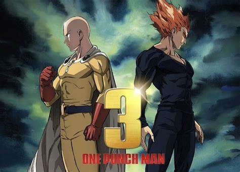
3️⃣ Naruto: New Generations
🍃 Konoha berriro distiratzen du! Naruto, Boruto eta belaunaldi berri baten abenturak espero ditugu.
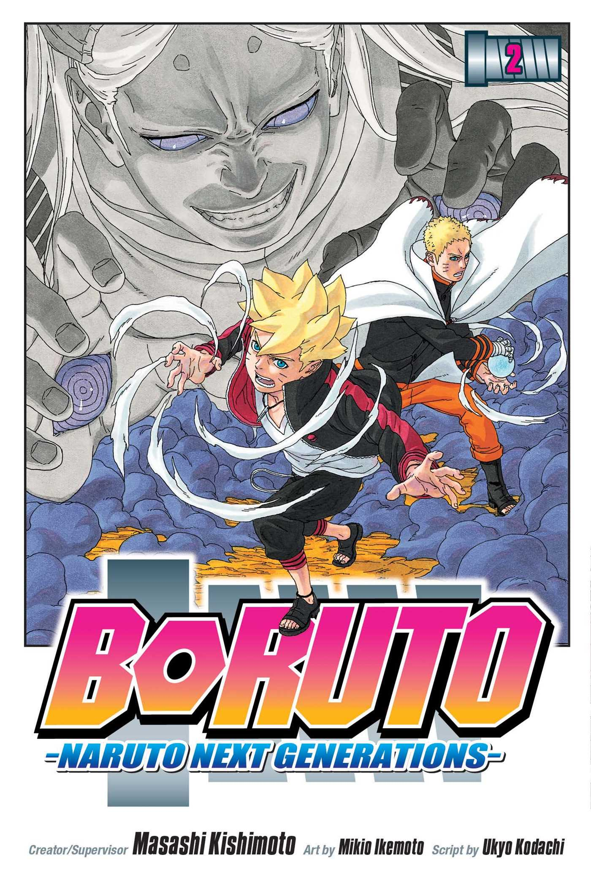
4️⃣ Chainsaw Man: 2. Denboraldia
🪚 Denji eta bere ibilerak bueltan dira, borroka odoltsu eta akzio paregabearekin.
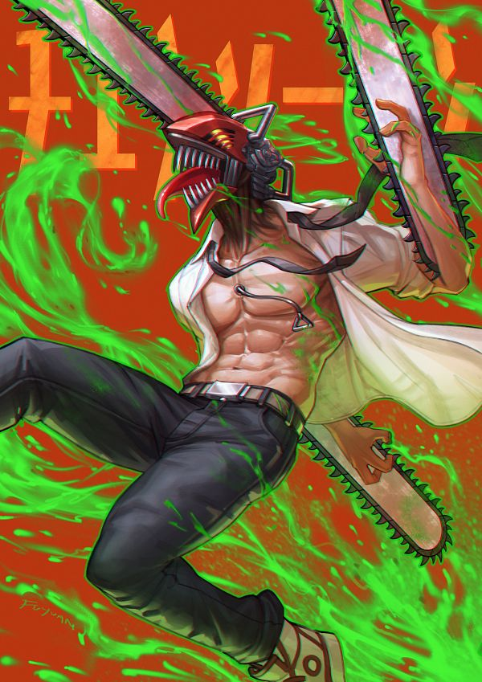
5️⃣ Bleach: Thousand-Year Blood War - Amaiera
⚔️ Soul Society-k azken borroka epikoa jokatuko du. Pertsonaiak inoiz baino boteretsuagoak!
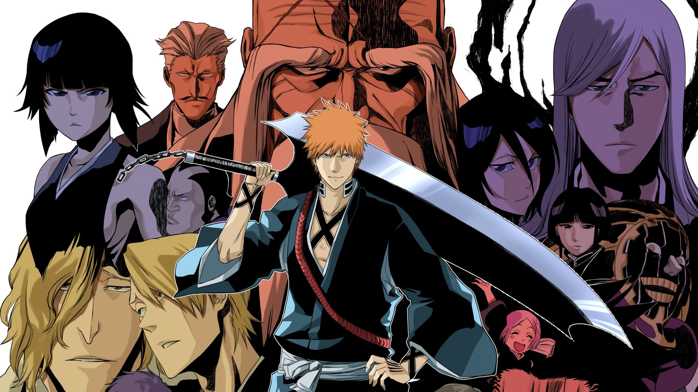
✨ Zaleentzako sorpresa gehiago!
Berrikuntzak eta Spin-off-ak: Genero guztietan nobedadeak.
Filma itxaropentsuak: Anime filmak urteko zinemetan nagusi izango dira.
🏴☠️ Prestatu zure agendak! 2025a anime urtea izango da, eta ez duzu ezer galdu nahi.
"Anime zaleak, gure unea iritsi da!" 🎥🌟
Gehiago irakurri